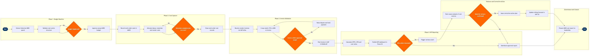

| Step | L4 Step Name | KPI / Target | Pain Point / Risk | Gate |
|---|---|---|---|---|
| 1.1 | Extract historical MRO spend from SAP S/4HANA | Baseline accuracy ≥98% vs audited actuals | AMOS work order costs and SAP cost centres may not be fully reconciled if interface mappings were altered during AMOS upgrades, producing baseline gaps | |
| 1.2 | Validate cost centre structure for MRO domains | 100% of AMOS work order types mapped to SAP cost centre before budget lock | New regulatory requirements (EASA Part-145, FAR Part 145) occasionally introduce new work-scope categories with no corresponding SAP cost centre, delaying budget submission | |
| 1.3 | Set annual MRO budget targets by category | Budget submission on time (T-60 days before fiscal year start) | Fleet utilisation assumptions from Amadeus SkyWORKS schedule plan may diverge from finance model, requiring manual reconciliation loop between Planning and Engineering | ⚠ |
| 2.1 | Record labour and material costs to work orders | Work order cost closure within 48 hours of task completion; <2% late-closure rate | Technician time entries in AMOS depend on line-station connectivity; remote outstations with poor VPN links accumulate backlog of uncosted work orders, distorting weekly cost reports | |
| 2.2 | Allocate vendor costs to work orders via SAP Ariba | 100% of vendor POs linked to a work order before invoice approval | Ad-hoc AOG purchases placed verbally and backed by emergency POs are frequently missing work order references, requiring retrospective allocation that delays month-end close by 3–5 days | |
| 2.3 | Validate work order cost allocation completeness | ≤1% of period spend unallocated at month-end close | AMOS does not enforce mandatory cost-centre fields on all work order types; engineering change orders may slip through without allocation flags | ⚠ |
| 3.1 | Receive and register vendor invoices in SAP Ariba | Invoice registration within 24 hours of receipt; e-invoice adoption ≥70% of MRO vendors | Many smaller MRO vendors (especially AOG parts suppliers) still submit paper invoices or non-standard PDF formats; manual data entry introduces keying errors that fail automated matching | |
| 3.2 | Execute 3-way match: PO vs GRN vs invoice | First-pass 3-way match success rate ≥85%; invoice cycle time ≤10 days | Component exchange transactions (core returns) create credit/debit timing mismatches between AMOS goods receipt and vendor invoice, routinely failing automated matching and requiring manual intervention | |
| 3.3 | Validate invoice scope against approved work order | Invoice dispute rate ≤5% of total MRO invoices per month | Vendors frequently invoice for additional scope discovered during shop visits (beyond approved estimate), and contracts that lack not-to-exceed clauses result in uncontrolled cost escalation; AMOS scope change workflow is not always enforced before additional work begins | ⚠ |
| 3.4 | Post approved vendor invoices in SAP AP | On-time payment rate ≥95%; early payment discount capture ≥80% where applicable | Payment terms negotiated in SAP Ariba contracts are not always replicated accurately in SAP vendor master, resulting in missed early-payment discounts and occasional late-payment penalties | |
| 4.1 | Extract cost and utilisation data for KPI calculation | Data pipeline refresh completed by Day 3 of month following reporting period | AMOS and SAP use different fiscal period boundaries; the one-day offset between AMOS maintenance close and SAP financial close creates period-boundary mismatches that require manual correction macros in the ETL pipeline | |
| 4.2 | Calculate CPFH, cost-per-cycle and maintenance cost ratio | CPFH variance vs budget ≤±5%; maintenance cost ratio ≤15% of total operating cost | Jeppesen FliteDeck flight data is updated at block-off; last-minute flight diversions or technical returns can shift utilisation hours after the KPI snapshot has been taken, requiring a restatement process | |
| 4.3 | Publish KPI dashboard to Power BI for stakeholders | Dashboard published by Day 5 of the following month; stakeholder satisfaction score ≥4/5 | Row-level security in Power BI requires separate maintenance when new vendor contracts are onboarded; security configuration delays occasionally result in vendors seeing each other's cost data | |
| 4.4 | Review KPIs against thresholds and alert on breaches | All Red-threshold KPIs reviewed and actioned within 5 business days | Threshold parameters are set at contract signing and rarely reviewed; fleet age progression and inflationary pressures mean legacy thresholds become misleading benchmarks that suppress appropriate escalation | ⚠ |
| 5.1 | Conduct root-cause analysis for cost overruns | Root-cause report issued within 10 business days of period close | AMOS work order comments are free-text with no structured categorisation, making automated root-cause clustering difficult; analysts must manually review hundreds of work orders to isolate systemic issues | ⚠ |
| 5.2 | Issue corrective action plan and assign owners | CAP issued within 5 business days of root-cause sign-off; ≥80% of CAP actions closed on time | No dedicated CAP tracking module in AMOS or SAP; action tracking is managed in spreadsheets, causing loss of accountability and making it difficult to evidence closure during EASA audits | |
| 5.3 | Update rolling MRO cost forecast in SAP CO | Forecast accuracy (latest estimate vs actual at year-end) ≤±3% | Utilisation forecast from Amadeus SkyWORKS is updated weekly but SAP CO planning cycles are monthly; mid-month schedule revisions (e.g. aircraft AOG grounding) are not reflected until next month's forecast, inflating CPFH variances | |
| 6.1 | Prepare monthly MRO cost report for leadership | Report distributed by Day 7 of following month to CFO, VP Engineering, and CEO | Manual narrative writing for executive commentary is time-consuming; inconsistent framing between monthly reports reduces readability and makes period-over-period trend comparison difficult |